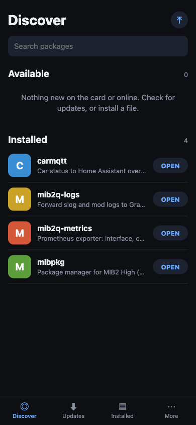
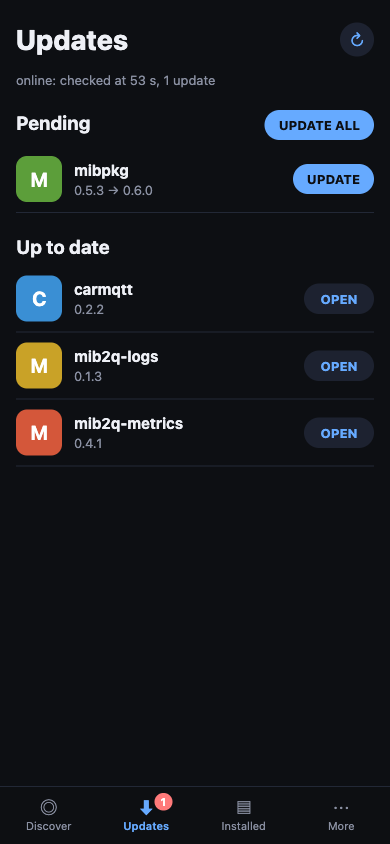
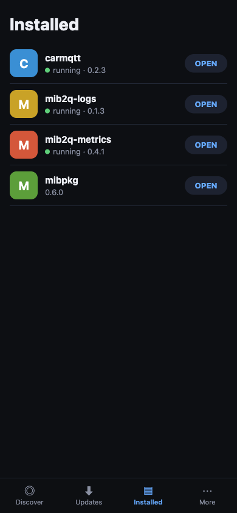
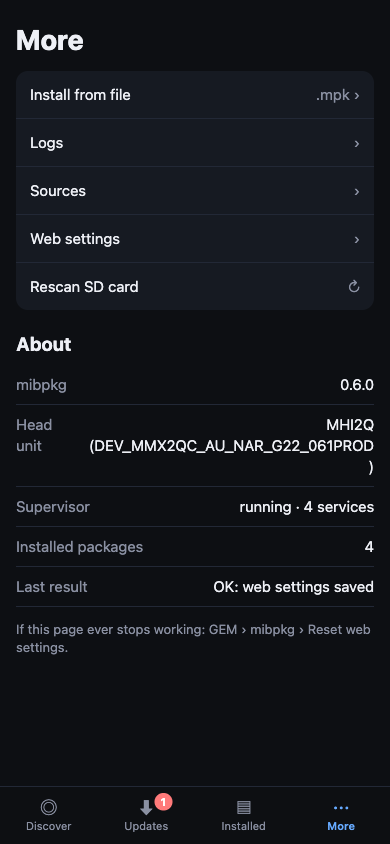
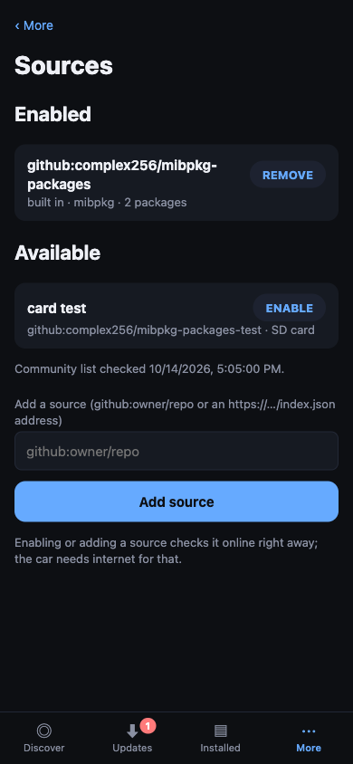

Web interface¶
The web interface is the main way to use mibpkg. It is served by the car, so it works from a phone on the hotspot or from a laptop on the tailnet.
Open it¶
- Join the car's Wi-Fi hotspot, or reach the car over Tailscale.
- In the car, open GEM → mibpkg for the address (for example
http://10.255.1.1). - Open the address in a browser.
By default mibpkg listens only on the hotspot and Tailscale. More → Web settings changes that.
The four tabs¶
| Tab | What it is for |
|---|---|
| Discover | Packages on the card and in online collections |
| Updates | Packages with a newer version, and Update all |
| Installed | What is installed: inspect, configure, restart, roll back, remove |
| More | Install from file, logs, sources, web settings, health |

Discover¶
Browse by collection. A package page shows its version, description, compatibility, size, services, configs and — for a plugin — the permissions it asks for. Install starts a job.

Updates¶
A row appears when a newer compatible version is in a loaded collection. Update all updates every package that needs no new permission approval. A plugin update that adds a permission must be updated individually so the approval sheet can be shown.
Installed¶
The package page has:
- Open — the package's own page or service status, when it has one.
- Configs — edit a config file.
- Logs — follow the package's log.
- Restart — restart its services.
- Rollback — switch to the previous version, if one is kept.
- Remove — remove the package; remove and delete data purges its data.

More¶
- Install from file — upload a
.mpkfrom the phone. - Logs — the web server, supervisor and package logs.
- Sources — online collections and the card's
sources.toml. - Web settings — listen addresses, port, hotspot interface and PIN.
- Health — versions, disk, supervisor and service state.

Jobs and busy states¶
An action runs as a job. The page follows it and shows its output. Only one action runs at a time:
- a second web action gets 409 busy and the id of the running job;
- an action while GEM is running gets busy too.
Wait for the running job to finish, then retry. A reloaded page reattaches to the running job.
Uploads¶
More → Install from file streams the file to the car and inspects it before installing. It shows:
- the package name and version;
- whether it is new, an upgrade, the same version, or older;
- compatibility with this unit;
- services and scripts;
- permissions the plugin asks for, and which ones need approval.
Uploads expire after 10 minutes. Install or discard them.
Permissions¶
A plugin's permissions are shown one per row in plain words. Install only continues when the sheet is approved. A permission the user revoked stays revoked, even if the package is installed again, until it is granted on the plugin's page.
